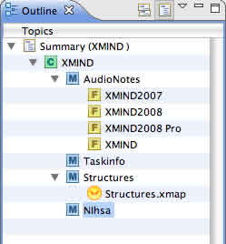

Outline is a tree-like view in XMind. Open outline view, you can see all elements of the current map or wookbook. And you can even do some modifications here directly:
- Topic: You can drag and drop topic from outline view and copy it into XMind editor.
- Marker: You can see Priority, Smiley, Task Complete, and Flags markers here, if some topics are added them.
- Hyperlink: You can see the hyperlinks if some topics are added it.

Outline View Toolbar
Outline has its own toolbar.
- Show Workbook: Click to show all maps in this workbook.
- Show Current Map: Click to show the current map only.
You may also be interested in...